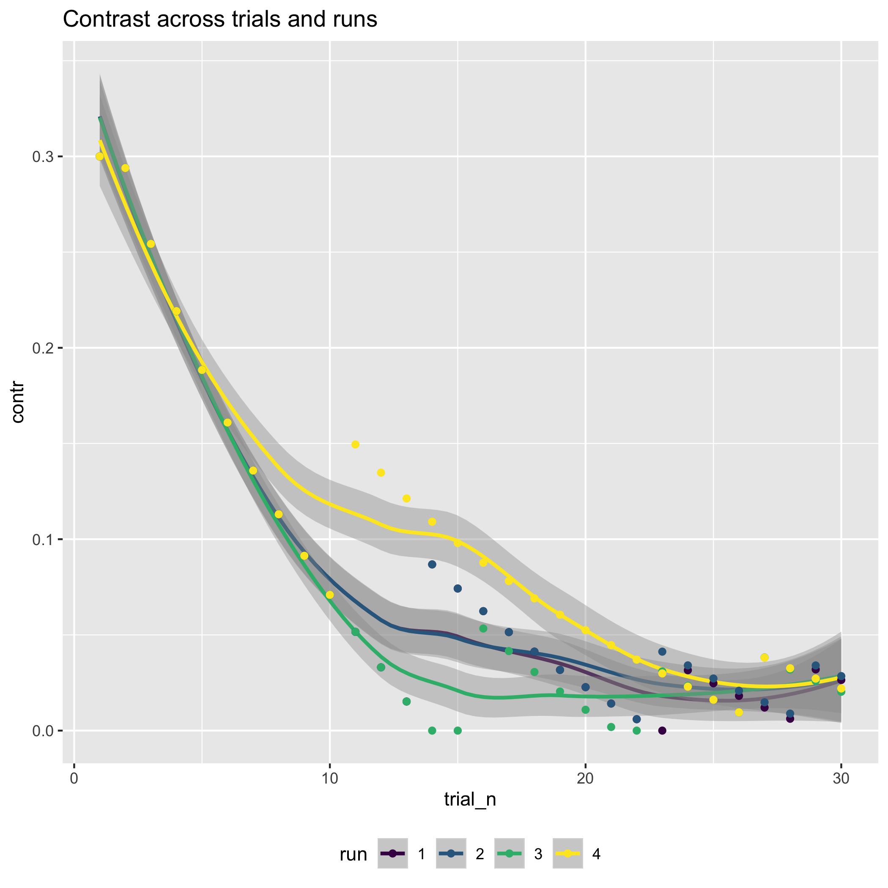

The past and future of science is open
The present is what we make it

Munafò et al. (2017)


…The initial aim of the project was to repeat 193 experiments from 53 high-impact papers…However, the various barriers and challenges we encountered while designing and conducting the experiments meant that we were only able to repeat 50 experiments from 23 papers…
Errington et al. (2021)
…the data needed to compute effect sizes and conduct power analyses was publicly accessible for just 4 of 193 experiments…none of the 193 experiments were described in sufficient detail in the original paper to enable us to design protocols to repeat the experiments…
Errington et al. (2021)
…While authors were extremely or very helpful for 41% of experiments, they were minimally helpful for 9% of experiments, and not at all helpful (or did not respond to us) for 32% of experiments…
Errington et al. (2021)
…This experience draws attention to a basic and fundamental concern about replication – it is hard to assess whether reported findings are credible.
Errington et al. (2021)


Figure 1: % of U.S. adults who said science has had a(n) ___ effect on society

Merton (1973)
- Communalism (common ownership)
- Universalism (independent validity)
- Disinterestedness (public benefit)
- Organized skepticism (scrutinize everything)

Merton (1973)
The mores of science possess a methodologic rationale…They are procedurally efficent…
Feynman (1974)
“The first principle is that you must not fool yourself—and you are the easiest person to fool. So you have to be very careful about that. After you’ve not fooled yourself, it’s easy not to fool other scientists.”

Feynman (1974)
“I’m talking about a specific, extra type of integrity that is not lying, but bending over backwards to show how you’re maybe wrong, that you ought to do when acting as a scientist. And this is our responsibility as scientists, certainly to other scientists, and I think to laymen.”
Feynman (1974)
“…If you’ve made up your mind to test a theory, or you want to explain some idea, you should always decide to publish it whichever way it comes out. If we only publish results of a certain kind, we can make the argument look good. We must publish both kinds of result.”

https://teacherhead.com/2017/02/27/reinventing-the-wheel-again/

Tenopir et al. (2020)
Trade-offs
- Speed vs. accuracy (Fitts 1954)
- Hard to be fast AND accurate


Kahneman (2013)
Twain (1997)
Courage is resistance to fear, mastery of fear—not absence of fear.

If you have nothing to hide, hide nothing

Toothbrush culture

Mischel (2011)
…psychologists tend to treat other peoples’ theories like toothbrushes; no self-respecting individual wants to use anyone else’s.

Mischel (2011)
The toothbrush culture undermines the building of a genuinely cumulative science, encouraging more parallel play and solo game playing, rather than building on each other’s directly relevant best work.

Qian, Berenbaum, and Gilmore (2022)

Qian, Berenbaum, and Gilmore (2022)

Qian, Berenbaum, and Gilmore (2022)


Power analysis curves from Qian, Berenbaum, and Gilmore (2022)
Lessons learned

https://quarto.org
Lessons learned
- “Plot your data!”
- And save the plots, so you can use them later
- Be kind to your future (forgetful) self


“The Datasaurus Dozen - Same Stats, Different Graphs | Autodesk Research” (n.d.); Matejka and Fitzmaurice (2017)

“The Datasaurus Dozen - Same Stats, Different Graphs | Autodesk Research” (n.d.); Matejka and Fitzmaurice (2017)
Contrast Task

Motion Task

Contrast Task

Motion Task

Contrast Task

Motion Task

Opening the file drawer


Figure 3 from Soska et al. (2021)

Time series of visits

Distribution of prospective participant birthweights

Parent-reported child bedtime

Comparing Adolph to WHO walk onset criteria

Crawl onset vs. Walk onset


Who does the laundry?

- Scriptable (==reproducible) workflows via the Databrary API and the databraryr package
- Python equivalent (databrarypy) in progress.


Thank you, Brian


Three Little Pigs

Pantheon
Feynman (1974)
…So I have just one wish for you—the good luck to be somewhere where you are free to maintain the kind of integrity I have described, and where you do not feel forced by a need to maintain your position in the organization or financial support, or so on, to lose your integrity. May you have that freedom.

Yoda
Do or do not. There is no try.

{kind=link}
{kind=link}
Annie Easley
…People have their biases and prejudices, yes, I am aware. My head is not in the sand. But my thing is, if I can’t work with you, I will work around you.


https://www.aarp.org/politics-society/history/info-2018/rosie-riveter-dies-fd.html
It does not matter how slowly you go so long as you do not stop

Wherever you go, go with all your heart